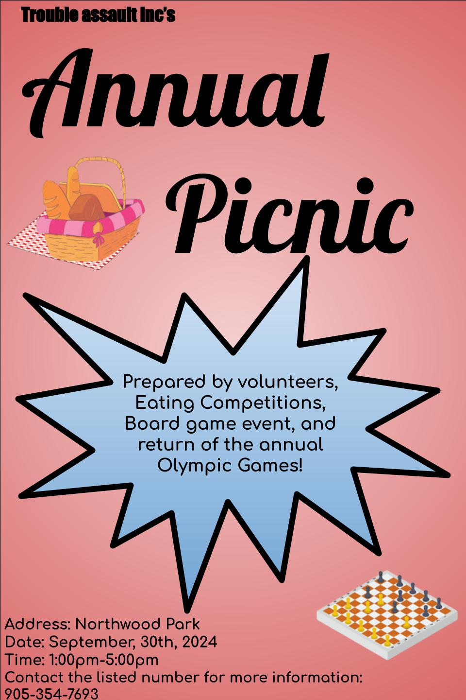

Reflections about my artifacts
This artifact, a group project poster, holds significant personal value as it represents a pivotal moment of growth in my skills and knowledge. It showcases my ability to collaborate effectively with team members, making it a strong testament to my teamwork skills and my capacity to work harmoniously towards a common goal. The artifact also highlights my proficiency in creating visually appealing promotional materials, demonstrating my attention to detail and creativity. As I move forward, this artifact will serve as a powerful example of my capabilities in the world of business, where effective collaboration and visually compelling marketing materials are highly sought after.
Additionally, this artifact aligns perfectly with the Catholic Graduate Expectations and Social Teachings. It reflects the values of solidarity and working together towards a better world, as it exemplifies my ability to contribute positively to a team and community. By showcasing my capacity to communicate effectively and collaborate, this artifact embodies the importance of these skills in community involvement, and professional settings. It serves as a reminder of the teachings of solidarity and the significance of working together to create a more inclusive and prosperous society.

The video presentation I have crafted serves as a compelling demonstration of my creativity, research capabilities, and communication skills. Its visual and thematic elements not only captivate the audience but also reflect my ability to develop engaging content with a lasting impact. Through extensive research from reputable sources, I have ensured the reliability and accuracy of the information presented, showcasing my commitment to thoroughness and understanding of the subject matter.Furthermore, this artifact reflects my expectation of being an effective communicator. Through the use of visual media and a coherent narrative, I am able to clearly convey ideas and information to the audience. This skill is essential in various aspects of life, whether it be in business settings, educational environments, or any other example.Looking ahead, this artifact will be a valuable asset in the world of business communication technology and beyond. My understanding to create visually captivating and thought-provoking presentations is highly desirable in professional settings, and my video presentation exemplifies this skill. It will enable me to effectively communicate ideas, engage clients, and leave a lasting impression, which are essential in various business contexts. Moreover, beyond business, this artifact reflects my ability to authentically capture the essence of a topic and convey its significance, making it a versatile tool in education, advocacy, and community engagement. The video presentation not only showcases my skills but also aligns with the Catholic Graduate Expectations by demonstrating effective communication and a commitment to social justice and responsible citizenship.
The artifact I have chosen to reflect on is a comprehensive chart highlighting my adeptness in using various software applications, such as Google Sheets and Microsoft Excel. This artifact serves as an excellent example of my skills and knowledge due to its demonstration of adaptability, efficiency, and problem-solving abilities. As I progress in the business world, this artifact will be instrumental in showcasing my ability to analyze and present data effectively, essential for communication and decision-making in any organization. In connection to the Catholic Graduate Expectations, this artifact reflects my commitment to excellence, critical thinking, and ethical use of technology for the betterment of the community. It exemplifies my dedication to being an effective communicator and a collaborative contributor to the common good, aligning with the social teaching principles of solidarity and stewardship.this chart not only showcases my proficiency in using software applications but also reflects my commitment to ethical and impactful use of technology, making it a valuable asset as I continue to advance in the world of business and beyond.

The creation of the video tutorial on using Paint 3D exemplifies my proficiency in desktop publishing software and my ability to effectively communicate complex concepts. By providing clear and concise explanations, my partner and I aimed to teach the audience about the fundamental concepts of Paint 3D, showcasing our commitment to excellence and passion for sharing knowledge. Additionally, the collaborative nature of the project highlighted our ability to work effectively in a team, demonstrating our capacity for collaboration and communication, which are essential skills in any professional setting. Furthermore, the tutorial's demonstration of problem-solving and adaptability in overcoming technical obstacles speaks to our resourcefulness and creativity in the face of challenges, qualities that will undoubtedly serve me well as I move forward, whether in the world of business or otherwise.In connection to the Catholic Graduate Expectations and Social Teaching, the creation of the tutorial aligns with the expectation of being an effective communicator, a reflective and creative thinker, and a collaborative contributor. It embodies the principles of social justice and the promotion of the common good, as it aims to foster creativity and knowledge sharing for the benefit of others. This endeavor demonstrates my dedication to personal and academic excellence, as well as my commitment to contributing to the betterment of society through the sharing of knowledge and skills.
My meticulously designed Wix website exemplifies my expertise in digital marketing and communication, showcasing the effective use of design principles like AIDA, CRAAP, and whitespace to promote headphones. The website not only provides detailed descriptions and information about the products but also highlights the company's integral role in advancing communication technology. By seamlessly blending visual appeal, engaging content, and a user-friendly experience, I have successfully captivated viewers and drawn their attention to the promoted headphones. As I move forward, this artifact will be invaluable in my future endeavors, providing a strong foundation for success in the world of business and beyond. The skills and knowledge demonstrated in designing this website will serve me well in various aspects of my professional and personal life, particularly in digital marketing and the business communication technology field in general. Moreover, the website reflects my alignment with the Catholic Graduate Expectations and the Social Teaching by promoting responsible consumerism, ethical communication, and the advancement of technology for the common good.
pages